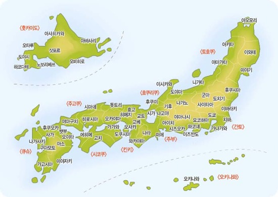
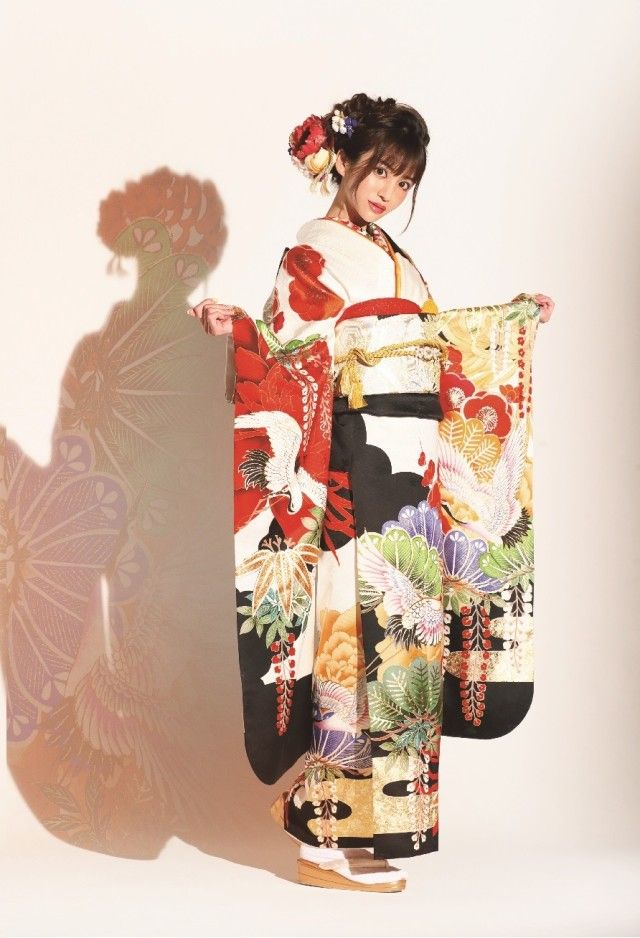
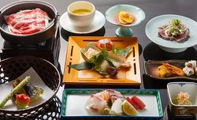

일본의 가장 큰 특징은 섬나라라는 것이다. 일본은 어느 정도 여유롭게 자신들만의 세계관을 구축하면서 외부 세계를 방관자적인 시선으로 관망할 수 있었다.사실 일본은 서기 4~8세기 경을 거쳐 야마토가 일본 전역의 소국들과 연맹왕국, 부족들을 흡수해서 몇세기 동안 도호쿠 이북과 류큐를 제외한 나머지 지역을 자신들의 세력권안에 집어넣으며 통일 왕국을 구축했다가 중앙정부가 쇠퇴하고 수백년에 이르는 오랜기간 동안 자기네들끼리 지방 세력을 구축하며 자기네들이 아웅다웅 싸워댔기 때문에 대륙에서 무슨 일이 일어나든 일본에서는 강 건너 불구경이었기는 했다. 그러다 보니 몽골 제국의 일본 침략이 큰 충격이었던 것. 이에 비해 영국은 똑같이 섬나라인데도 이미 고대부터 로마 문명에 편입 되었고 중세에는 바이킹 인베이전, 근세부턴 본인들이 대륙의 세력균형 다툼에 적극적으로 뛰어드는 등 일본에 비하면 대륙과의 관계성이 강해 이 점에서 대비가 된다.
일본의 의복

다른 나라와 마찬가지로 의복 문화 자체는 현대화/서구화되어 있다. 일상적인 의복에서는 한국과 꽤나 닮았다.
젊은이들 사이에서는 로리타 패션이나 왕자계 등 상당히 개성적인, 본인들만의 의복 문화가 만들어지기도 한다. 이는 한국에 비해 다른 사람들의 의복에 크게 신경쓰지 않는 편인 일본의 풍토와도 어느 정도 연관이 있는 것으로 보인다.전통 의상으로는 한국의 한복, 중국의 한푸와 마찬가지로 북방(알타이)계 복식을 근간으로 하고 있는 기모노라는 전통 복식이 존재한다
일본의 게임
만화, 애니메이션과 함께 일본 문화를 지탱하고 있으며 전세계적 문화적 현상이라고 불리는 포켓몬스터, 슈퍼마리오와 같은 IP들의 원천이다.
가정용 콘솔 게임기와 오락실용 아케이드 게임기 인프라가 잘 구축되어 있다.
일본의 음식

일식(日食, 일본식 호칭은 日本食),화식(和食)이라고도 불린다. 일본 요리의 주요 특징으로는 '생식(生食)', '(재료 본연의 맛을 중시하는) 담백한 양념류', '섬세한 담는 방식' 이상의 세 가지가 주로 꼽힌다.